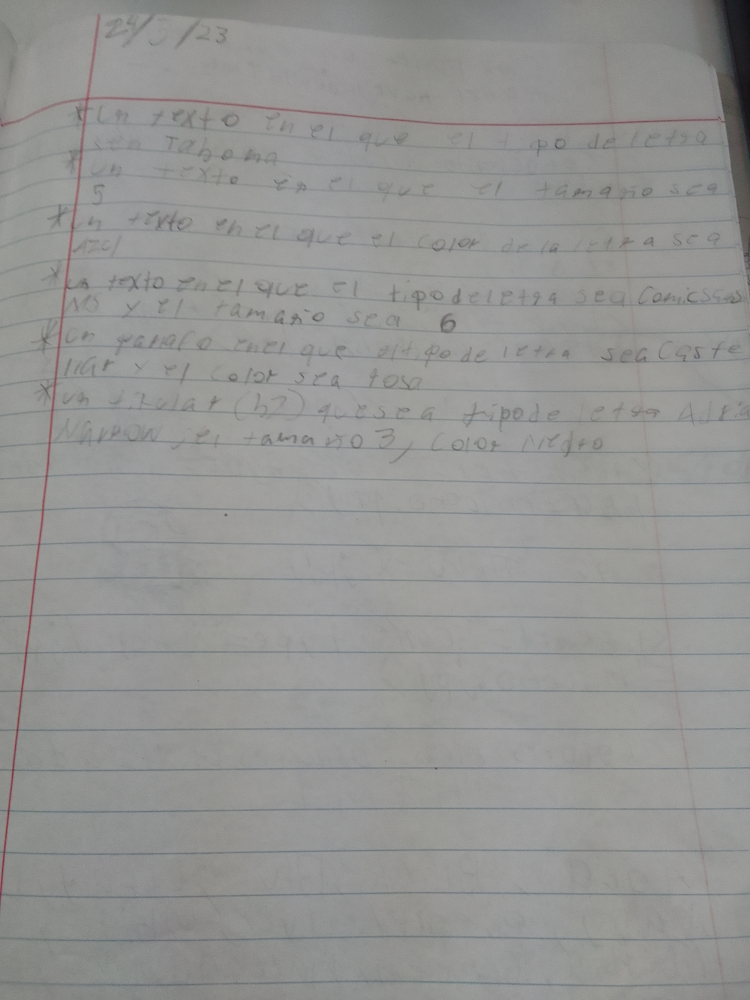
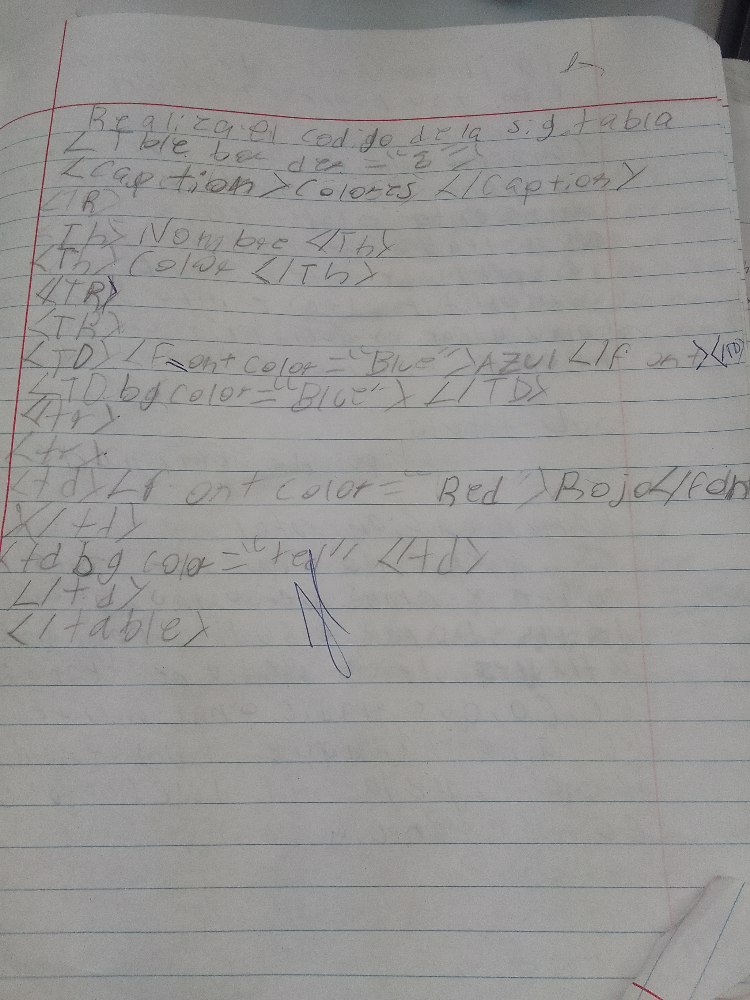
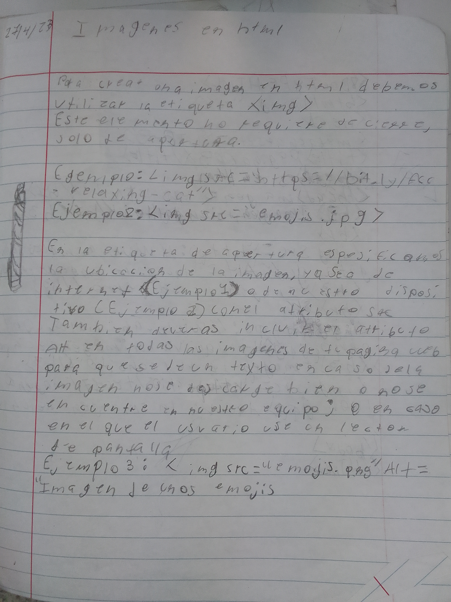
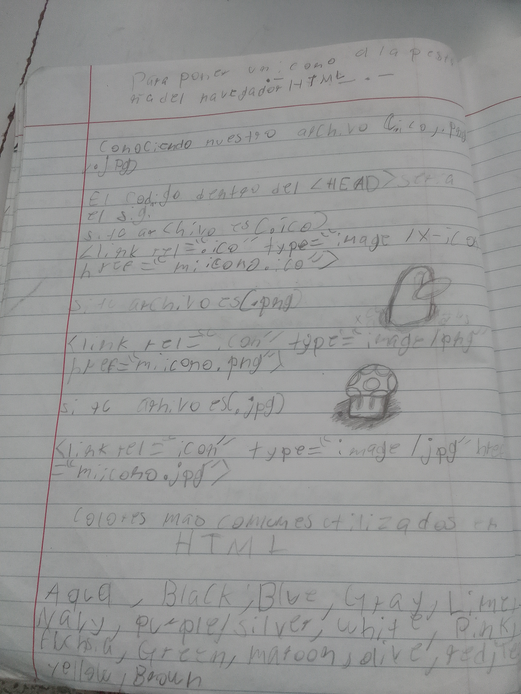
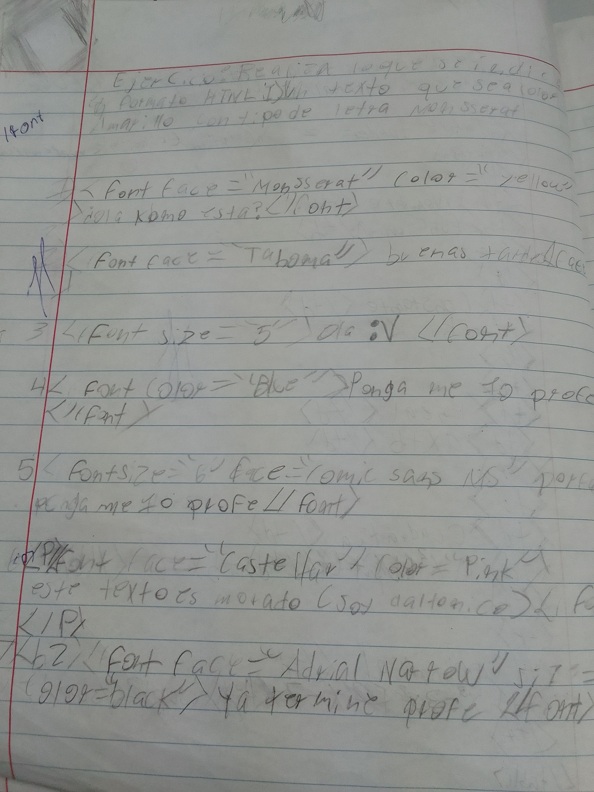

Trabajo de informatica Azael/Santiago
Inicio
Este es un trabajo de ecuaciones matematicas
Este es un trabajo de una lista de la tabla pereodica
este es un trabajo probando las fuentes de el navegador
Este es un trabajo probando las etiquetas en html
Este es un trabajo probando las fuentes
 
Este es un trabajo practicando la etiqueta < img >

Este es un trabajo viendo los tipo de fuentes

Este es un trabajo practicandos las fuentes
